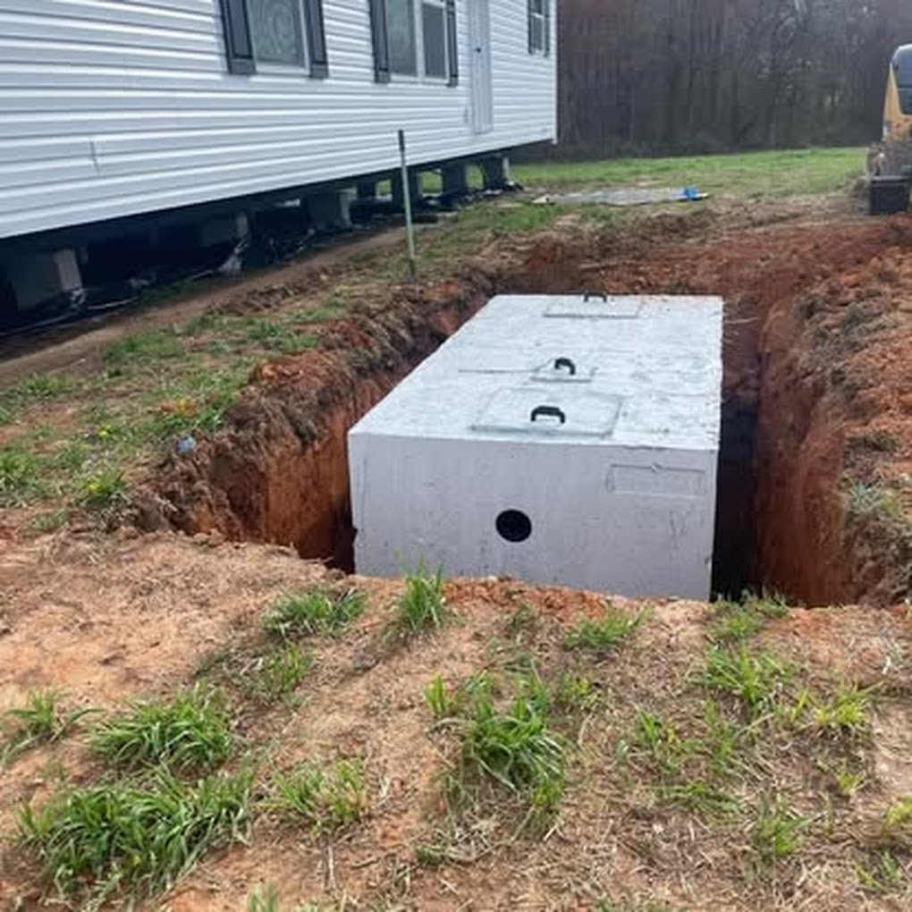

When Do You Need a New Septic System?
There are two common situations that require a full septic installation: new construction on a lot without public sewer access, and complete system replacement when an existing system has failed beyond repair. Redline provides septic system installation for homeowners, builders, and rural properties across Union, Cabarrus, Mecklenburg, and Anson Counties, handling the process from site evaluation through final inspection.
- New construction: Building in rural Monroe, Waxhaw, Wesley Chapel, or surrounding areas where public sewer isn't available
- Failed drain field: When the existing field can't be repaired and a new system is the only path forward
- System too small for the home: Older systems often don't meet current code for today's household sizes
- Tank structural failure: Severely cracked or collapsed tanks that can't be patched
Types of Septic Systems We Install
North Carolina's soil conditions vary considerably across Union County. The system type that works for a lot in Indian Trail may not work on a lot in Marshville. We assess your specific site and soil before recommending a system type.
Conventional Gravity System
The most common type in Union County. Wastewater flows by gravity from tank to drain field. Best for well-draining soils with good depth to the water table.
Low-Pressure Pipe (LPP)
Uses a small pump to distribute effluent evenly across a larger, shallower drain field. Required when soil depth or drainage is limited.
Drip Irrigation System
Drip lines deliver small, frequent doses of effluent to the soil. Used on lots with challenging soil or limited space for a conventional field.
Mound System
The drain field is built above grade in imported sand fill. Used when native soil depth is insufficient for a standard system.
Installation Cost in Union County
Pricing varies significantly based on system type, lot conditions, and whether demolition of the old system is required. These are representative ranges for Union County:
| System Type | Typical Cost Range |
|---|
| Conventional gravity system | $8,000 – $15,000 |
| Low-pressure pipe (LPP) | $12,000 – $20,000 |
| Drip irrigation system | $15,000 – $25,000 |
| Mound system | $18,000 – $30,000+ |
These figures include excavation, materials, permit fees, and final inspection. We provide written estimates before any work begins — no deposit required.
Union County permit note: All new installations require a permit from Union County Environmental Health at (704) 296-4210. For Cabarrus County properties, permits go through Cabarrus County Public Health. Redline handles the application and coordinates the inspection — you don't have to navigate that process alone.
Our Installation Process
1
Site evaluation & soil assessment
We walk the lot, assess drainage, identify setback requirements, and determine which system type your soil and lot can support.
2
Permit application
We submit the permit application to the county with the required site plan and soil information. Typical turnaround in Union County is 1–3 weeks.
3
Excavation
Tank hole and drain field trenches are excavated to the county-approved specifications. Old system removal is handled as part of replacement projects.
4
Tank and field installation
Tank is set, distribution box installed, drain field lines laid in gravel-filled trenches and connected per the approved design.
5
County inspection & backfill
The county inspector signs off before we backfill. Once approved, trenches are covered, the area is graded, and your system is live.
Frequently Asked Questions
Do I need a perc test before installation?
Yes, for most new installations. A percolation test determines how quickly your soil absorbs water and what system type it can support. We coordinate the testing process with the county.
How long does the whole process take?
From initial assessment to a working system, most conventional installations take 3–6 weeks — the majority of that is permit processing time. Active digging and installation typically takes 2–4 days once permits are in hand.
Can I stay in the home during installation?
Usually yes for replacement projects, though you'll need to avoid using water during the dig day. For new construction, there's typically no occupied home involved.
What warranty comes with a new system?
All Redline installations comply with NC state code and come with our workmanship guarantee. Manufacturer warranties apply to tanks and components. We'll walk you through everything at completion.
Septic System Installation Areas We Serve
Septic installation services throughout Union County, Cabarrus County, and surrounding areas including Monroe, Indian Trail, Waxhaw, Concord, Harrisburg, Midland, and beyond: